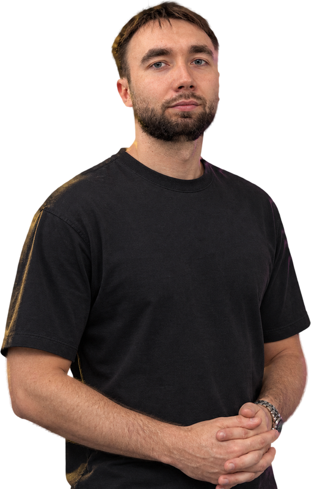
9 лет в коммерции: от менеджера до Head of Marketing
Москва · СПб · Сочи · Екатеринбург · Краснодар
Stepan Tarasov
От продаж к маркетингу
9 лет в коммерции: продажи, колл-центры, аналитика, маркетинг. Прошёл путь от менеджера до Head of Marketing.
Знаю воронку изнутри, потому что сам продавал и руководил продажами. Поэтому оцениваю маркетинг по заявкам, договорам и ROMI, а не по охватам. В СпартакМеб собрал отдел маркетинга с нуля, внедрил сквозную аналитику на Power BI и 1С, поднял ROMI до 700% и снизил CPL с 1 200 до 480 ₽.
- 01Опыт9 лет в коммерции, с 2017 года
- 02СейчасHead of Marketing, СпартакМеб, с марта 2025
- 03Командымаркетинг до 10 человек; продажи 24 менеджера + 2 старших менеджера (тимлида); колл-центры 120+ операторов
- 04Бюджетымаркетинговый бюджет 700 тыс. – 1,5 млн ₽/мес
- 05Отраслимебель (ритейл и B2B), EdTech, консалтинг
Профиль в цифрах
Масштаб и результаты
Карьера
От менеджера до Head of Marketing за 9 лет
-
2025 — н.в.
Head of Marketing
СпартакМеб · Тверь
Отдел маркетинга с нуля за 5 месяцев, на пике 10 человек: 4 товарных маркетолога, руководитель контента с дизайнером, контент-менеджером и AI-креатором. Бюджет 700 тыс. – 1,5 млн ₽/мес. ROMI 700%, CPL 1 200 → 480 ₽, CAC 4 100 → 2 700 ₽. До этого: старший товарный маркетолог (янв–мар 2025), ROMI 43% → 243%.
Подробнее о роли → -
2024 — 2025
Руководитель отдела продаж
Синергия · Москва
Построил отдел с нуля: 24 менеджера + 2 старших менеджера (тимлида), 8,8 млн ₽ в месяц, план выполнен до 180%.
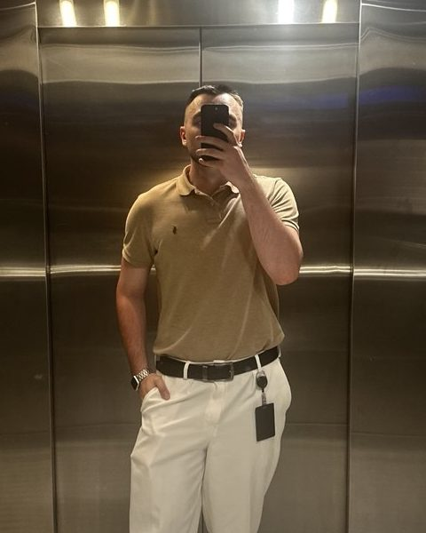
Синергия -
2022 — 2024
Начальник отдела аналитики продаж и ОКК
Business Booster
Команда 3 человека: аналитик, контроль качества, ассистент. CR в продажу +2,2%, NPS диагностики 73% → 84%, объём продаж ×1,2. Курировал внедрение AI в отдел продаж.
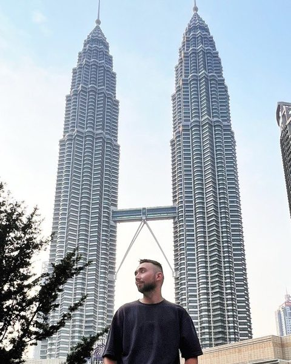
Business Booster -
2019 — 2022
Руководитель колл-центра
Like Центр · Москва
5 колл-центров, до 126 операторов на пике из России и Европы (штат и аутсорс), управление через 5 тимлидов. ROI колл-центра до 900%. Участвовал в запусках вебинаров компании: объём продаж на пиках до 300 млн ₽ за уик-энд.
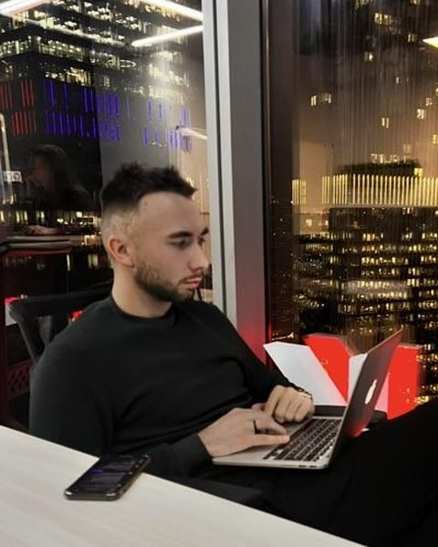
Like Центр -
2018 — 2019
Тимлид / супервайзер колл-центра
Skyeng · Москва
Команда 13 человек. CR заявка → оплата +4 п.п., средний чек 199 000 ₽.
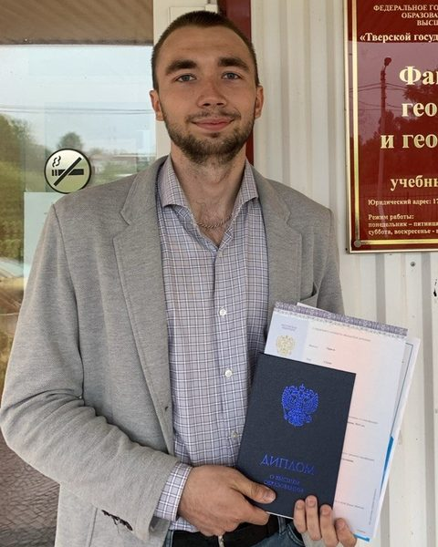
Skyeng -
2017 — 2018
Менеджер по работе с клиентами
FoxMotion · Тверь
Продажа услуг 3D mapping и анимации: лидогенерация, переговоры, КП.
FoxMotion


Достижения в должностях
Спартак
Меб
Отдел маркетинга с нуля за 5 месяцев, на пике 10 человек. ROMI 700%, CPL 1 200 → 480 ₽, +23% продаж B2B за 3 месяца.
→Подробнее о ролиbeard
.travel
Туры выходного дня на каяках, Тверская область. Лендинг, реклама и воронка: структура, тексты, вёрстка, запуск.
→Смотреть кейсВидео и креатив
Реклама для «СпартакМеб», 2026 · AI-продакшн: генерация Veo, сценарий, монтаж, звук. Все ролики вышли в эфир.
В эфире: СТС · НТВ · ТНТ · Россия · «Тверской проспект» · Яндекс Смарт ТВ · Smart TV
Полная история по каждой должности есть в резюме
Скачать резюме (PDF)Зоны ответственности
Чем занимаюсь как руководитель маркетинга. Цифры с текущего места: СпартакМеб.
-
01
Стратегия и бюджет
Декомпозиция целей по выручке в планы привлечения и KPI. Распределение бюджета в конверсионные каналы.
- KPI
- Юнит-экономика
- ROMI 700%
-
02
Построение отдела
Оргструктура, найм, адаптация, мотивация. SMM и SEO на аутсорсе.
- Найм
- KPI
- Обучение
- 0 → 10 человек
-
03
Performance
Яндекс.Директ, VK Ads, Авито, TG Ads. Бюджет 700 тыс. – 1,5 млн ₽/мес.
- Директ
- VK Ads
- Авито
- CAC 4 100 → 2 700 ₽
-
04
Сквозная аналитика
Power BI, 1С, коллтрекинг, Битрикс24. Контроль ROMI, ДРР, CAC, CPL, LTV. Сертификат Яндекс.Метрики.
- Power BI
- 1С
- Метрика
-
05
CRM и удержание
B2B CRM-маркетинг для опта с нуля: сегментация базы, email- и SMS-цепочки, реактивация.
- SMS
- +23% продаж B2B
- 24% спящей базы вернули
-
06
AI и автоматизация
ИИ-аудит звонков: Python транскрибирует звонки из Битрикс24 и проверяет их через Yandex GPT по чек-листу.
- Python
- Yandex GPT
- 100% звонков на аудите
-
07
Бренд, контент, офлайн
SMM, видео, influence, PR, ТВ, радио, event.
- VK
- ТВ
- Радио
- Охват VK +463% (янв–авг 2026)
-
08
Репутация и сервис
Работа с отзывами на Яндекс.Картах и в 2ГИС, синхронизация маркетинга и продаж.
- Яндекс.Карты
- 2ГИС
- NPS +21%
Умею руками
Скриншоты ниже: лендинги, которые я собрал сам
Могу не только поставить задачу, но и сделать сам: лендинги, автоматизации на Python, дашборды. Инструменты:
Реклама
- Яндекс.Директ
- VK Ads
- Авито Ads
- TG Ads
Аналитика
- Яндекс.Метрика
- Power BI
- DataLens
- Calltouch
- Excel
CRM и учёт
- Битрикс24
- AMO CRM
- 1С
AI и код
- Python
- Claude Code
- Codex
Дизайн и сборка
- Tilda
- Figma
- MIRO
Образование и сертификаты
- 2022МагистратураСПбПУ Петра Великого
- 2020ВысшееТверской государственный университет
Яндекс.Метрика
Сертификат специалиста · № 316060, до 11.09.2027
Яндекс.Директ
Базовый уровень · № 317037, до 02.10.2027
Скаенг · Интернет-маркетолог
Диплом переподготовки · 458 ч, 2026
После работы
Наведите на карточку — фото оживает- Баскетбол17 лет в полупрофессиональном режиме
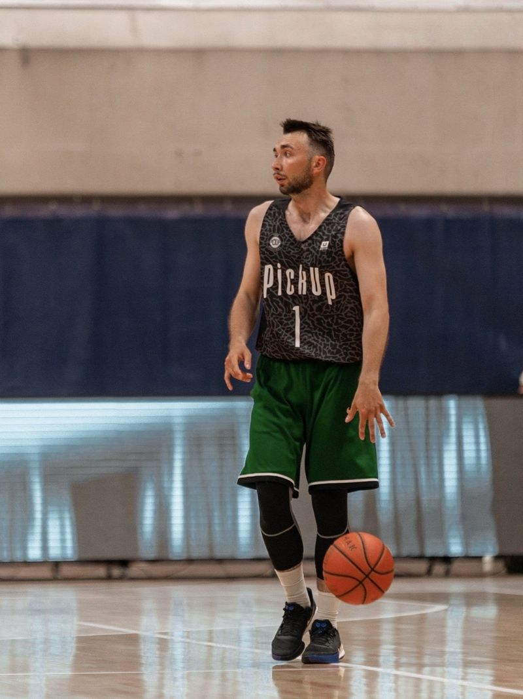
- СплавыЕжегодные летние сплавы
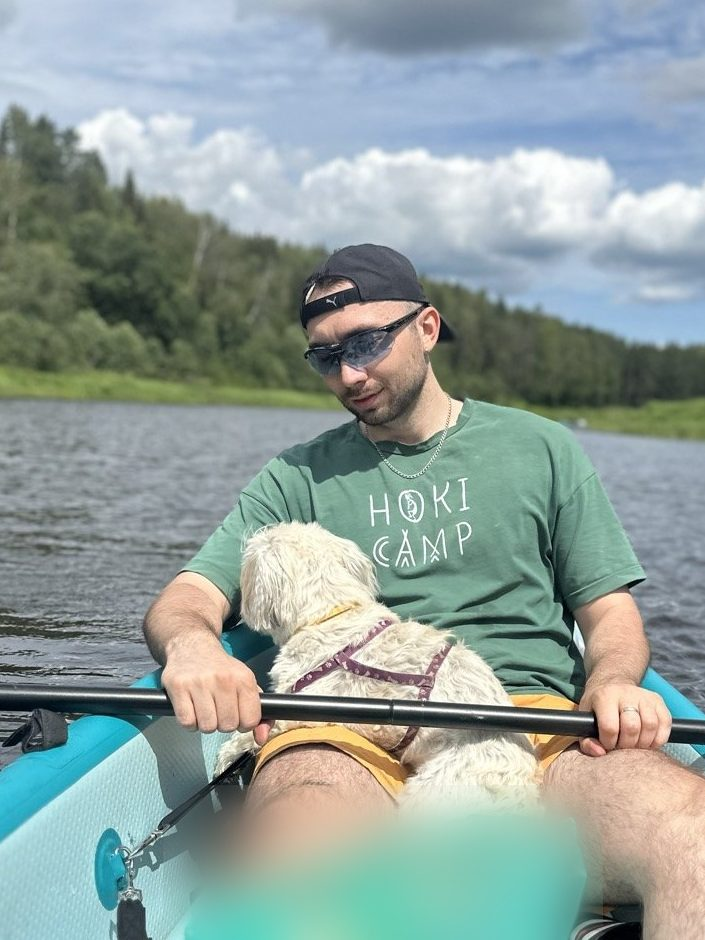
- ХайкингЛучший способ испытать себя
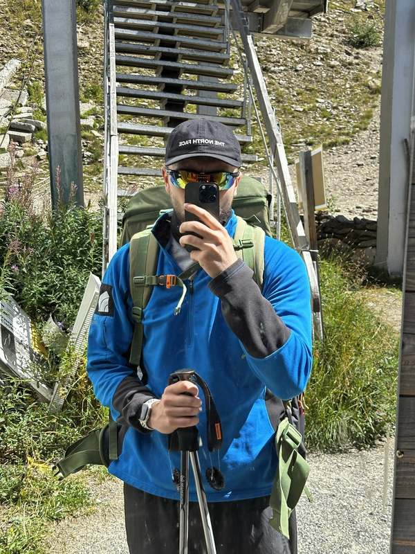
- ГорыВосхождения в любую погоду
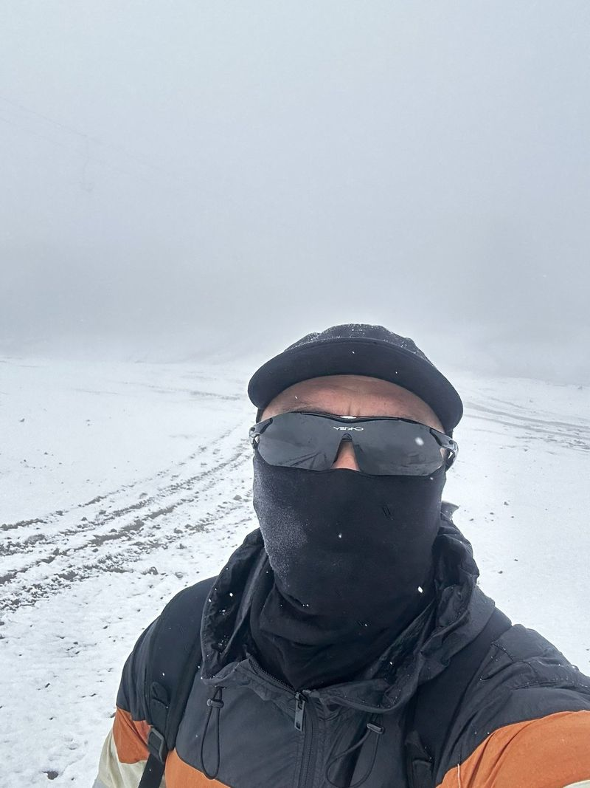
- ВелоГонки на выносливость
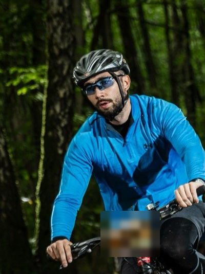
- СёрфКогда удаётся вырваться к океану
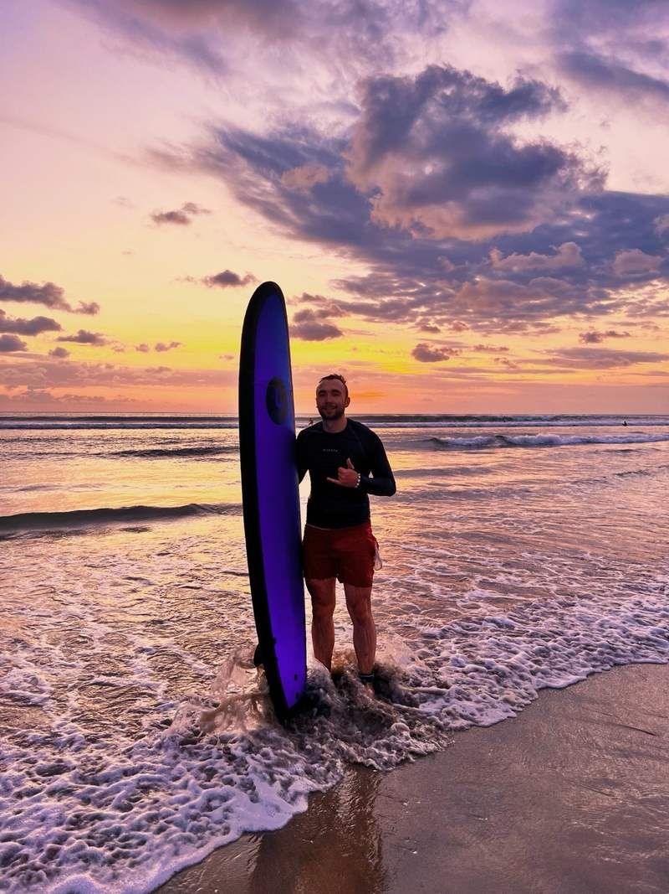
Ещё: гитара · падел
Рекомендации
«Степан пришёл в «Спартакмеб» старшим маркетологом и очень быстро показал, что мыслит шире своей должности. … Он сам описал структуру будущего отдела, вместе со мной провёл подбор, выстроил адаптацию и уже через три месяца руководил полноценной командой. … Для HR это лучший тип руководителя: с ним команда становится сильнее, а не просто выполняет задачи.»
Читать полностью
Мне приятно рекомендовать Степана Тарасова. Степан пришёл в «Спартакмеб» старшим маркетологом и очень быстро показал, что мыслит шире своей должности. Маркетинга как отдела у нас тогда фактически не было: несколько человек без чёткой структуры и зон ответственности. Степан не стал ждать идеального момента. Он сам описал структуру будущего отдела, вместе со мной провёл подбор, выстроил адаптацию и уже через три месяца руководил полноценной командой.
Больше всего меня впечатлило, как он работает с людьми. Степан даёт сотрудникам ясные цели и честную обратную связь, а оценивает их по фактам, а не по симпатии. За годы руководства в продажах и колл-центрах он научился находить подход и к опытным специалистам, и к новичкам. Поэтому люди в его команде быстро растут и не уходят.
Степан спокоен в стрессовых ситуациях, легко договаривается с отделом продаж и другими подразделениями и сам приходит с идеями, как улучшить процессы. Для HR это лучший тип руководителя: с ним команда становится сильнее, а не просто выполняет задачи. Рекомендую Степана как зрелого руководителя и надёжного коллегу.
«Когда я пришёл в «Спартакмеб» коммерческим директором, отдел маркетинга под руководством Степана Тарасова уже работал как система. … с первых дней я видел, сколько стоит каждый клиент и из какого канала он пришёл. … Со Степаном легко работать в связке маркетинга и продаж: он говорит на языке выручки и сам предлагает, где её добрать.»
Читать полностью
Когда я пришёл в «Спартакмеб» коммерческим директором, отдел маркетинга под руководством Степана Тарасова уже работал как система. Для меня это стало редким подарком: с первых дней я видел, сколько стоит каждый клиент и из какого канала он пришёл.
Что я ценю в работе Степана:
- Рост окупаемости. ROAS в среднем рос на 17 п.п. от месяца к месяцу.
- Дешёвые лиды. На хорошо проработанных акционных кампаниях стоимость заявки в пике снижалась до 375 ₽.
- CRM-маркетинг. Степан придумал удобный HTML-формат рассылок, и в первые две недели теста кликабельность выросла на 24 п.п.
- Техника своими руками. Сам настраивает Директ, Avito Ads, VK Ads и TG Ads. Написал на Python ИИ-аудит звонков, который помог поднять конверсию в сделку.
- Креатив без студий. UGC, реферальная программа. Сам монтирует видео и делает ИИ-ролики для радио.
Со Степаном легко работать в связке маркетинга и продаж: он говорит на языке выручки и сам предлагает, где её добрать. Рекомендую.
Контакты
Рассматриваю роли Head of Marketing и CMO в компаниях, где маркетинг отвечает за выручку.
Скачать резюме (PDF)- 01Занятостьполная
- 02Форматофис, гибрид, удалённо
- 03Городживу в Твери; приоритет: Москва, СПб, Сочи, Екатеринбург, Краснодар